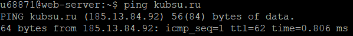
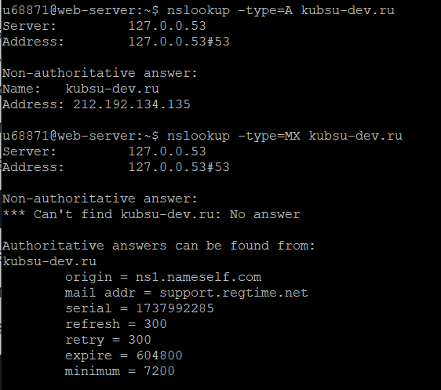
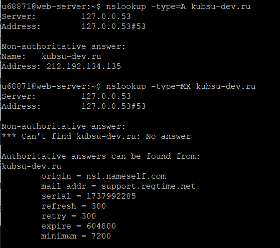
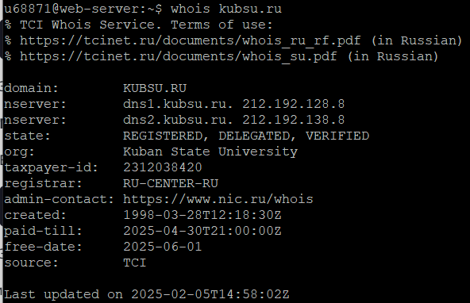
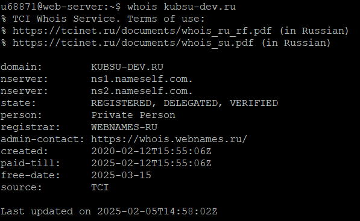

Задание 1
2) С помощью функции ping узнаем ip адрес kubsu.ru

3) С помощью функции nslookup получим A-записи и MX-записи доменов kubsu.ru и kubsu-dev.ru
 

A-запись домена позволяет узнать, на каком IP-адресе размещен сайт, а MX-запись указывает на серверы, принимающие почту для домена
4) С помощью функции whois узнаем даты регистрации доменов kubsu.ru и kubsu-dev.ru

На соответствующие даты указывает значение параметра created